Code
task_df <- read_rds(here("data", "final", "task.rds"))
participants <- read_rds(here("data", "final", "participants.rds"))For both task 3 and task 5, we fitted the data using Gaussian models.
Read in data
task_df <- read_rds(here("data", "final", "task.rds"))
participants <- read_rds(here("data", "final", "participants.rds"))Get the data:
task5_df <- task_df %>% filter(task == "task5") %>%
select(participantId, task, id, data.select.x, data.select.y, slider.x, slider.y) %>%
rename(data.ans.x = data.select.x,
data.ans.y = data.select.y,
data.select.x = slider.x,
data.select.y = slider.y) %>%
right_join(participants, by = join_by(participantId)) %>%
# do all the calculations for user's selected
mutate(pixel.select.x = data_to_pixel_x(data.select.x),
pixel.select.y = data_to_pixel_y(data.select.y),
phy.select.x = pixel_to_phy_x(pixel.select.x, pixelToMM),
phy.select.y = pixel_to_phy_y(pixel.select.y, pixelToMM),
va.select.x = vis_angle(phy.select.x, dist_to_screen),
va.select.y = vis_angle(phy.select.y, dist_to_screen)) %>%
# do all the calculations for the actual answer
mutate(pixel.ans.x = data_to_pixel_x(data.ans.x),
pixel.ans.y = data_to_pixel_y(data.ans.y),
phy.ans.x = pixel_to_phy_x(pixel.ans.x, pixelToMM),
phy.ans.y = pixel_to_phy_y(pixel.ans.y, pixelToMM),
va.ans.x = vis_angle(phy.ans.x, dist_to_screen),
va.ans.y = vis_angle(phy.ans.y, dist_to_screen))task5_df %>% ggplot(aes(y = va.ans.y, x = va.select.x - va.ans.x, color = participantId)) +
geom_point(alpha = 0.5)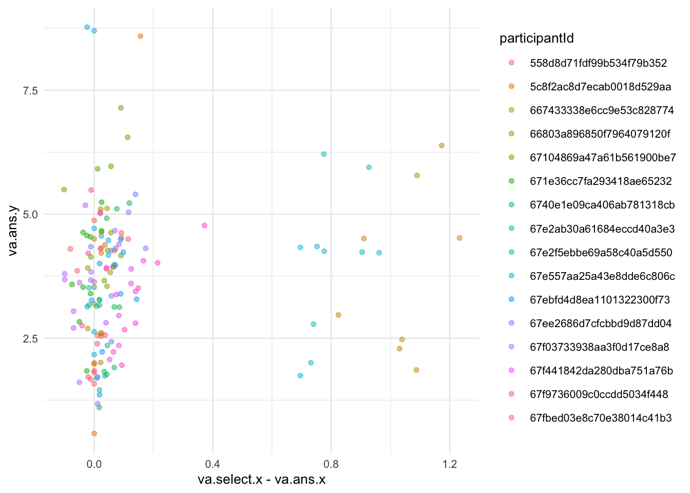
# task5_df %>% filter(va.select.x - va.ans.x > 0.4) %>%
# count(participantId) %>%
# left_join(participants, by = join_by(participantId))As can be seen, there are two participants, who have va.select.x - va.ans.x > 0.4. Let’s also plot what the actual selected answers in data space is:
task5_df %>% filter(va.select.x - va.ans.x > 0.4) %>%
ggplot() +
geom_point(aes(x = data.select.x, y = data.select.y, color = "select")) +
geom_point(aes(x = data.ans.x, y = data.ans.y, color = "ans")) +
facet_wrap(~participantId) + xlim(-5, 5) + ylim(0, 1)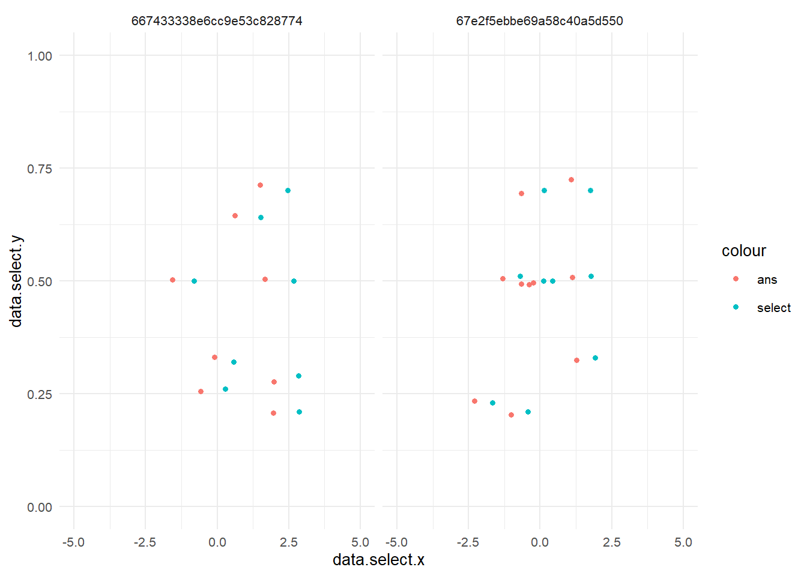
Recall that we are dealing with data that is already cleaned, so why are we still seeing data that is slightly shifted towards the right, for answers on the X-axis? Turns out these two participants were aligning things wrongly on the slider (i.e, they did not match the blue dot to the red dot but matched the thing on the slider to the red dot), hence the shift in their answers. We exclude these two participants from our analysis for task 5:
task5.x.exclude <- c("667433338e6cc9e53c828774", "67e2f5ebbe69a58c40a5d550")Math model:
\[\begin{align} \texttt{error}_i &\sim \mathcal{N}(\mu_\text{PID}[i], \sigma_{i, \text{PID}[i]}) \\ \mu_j &\sim \mathcal{N}(\overline{\mu}, \overline{\sigma}^2)\\ \log(\sigma_{i, j}) &= \alpha_j + \log(\texttt{va.ans.y}_i) \\ \alpha_j &\sim N(\mu_\alpha, \sigma_\alpha) \\ \mu_\alpha, \bar{\mu} &\sim N(0, 1) \\ \sigma_\alpha, \bar{\sigma} &\sim \text{Half-Cauchy}(0, 1) \end{align}\]
Specify formula and prior:
f <- bf(error_va ~ (1 | participantId),
sigma ~ (1 | participantId) + offset(log(va.ans.y)))
p <- c(
prior(normal(0, 1), class = Intercept),
prior(normal(0, 1), class = sd, group = participantId, lb = 0),
prior(normal(0, 1), class = Intercept, dpar = "sigma"),
prior(normal(0, 1), class = sd, group = participantId, dpar = sigma, lb = 0)
)Fit model:
m.5.x.va <- task5_df %>% mutate(error_va = va.select.x - va.ans.x) %>%
# exclude the two participants who answered this task wrong
filter(!participantId %in% task5.x.exclude) %>%
brm(
formula = f,
data = .,
family = gaussian(),
prior = p,
chains = 4,
cores = 4,
control = list(adapt_delta = 0.99),
iter = 6000,
file = here("fitted_models", "task5.x"),
file_refit = "on_change",
save_pars = save_pars(all = TRUE)
)Check fit and posterior:
summary(m.5.x.va) Family: gaussian
Links: mu = identity; sigma = log
Formula: error_va ~ (1 | participantId)
sigma ~ (1 | participantId) + offset(log(va.ans.y))
Data: . (Number of observations: 140)
Draws: 4 chains, each with iter = 6000; warmup = 3000; thin = 1;
total post-warmup draws = 12000
Multilevel Hyperparameters:
~participantId (Number of levels: 14)
Estimate Est.Error l-95% CI u-95% CI Rhat Bulk_ESS Tail_ESS
sd(Intercept) 0.04 0.01 0.02 0.06 1.00 3105 5850
sd(sigma_Intercept) 0.36 0.12 0.16 0.64 1.00 3628 5204
Regression Coefficients:
Estimate Est.Error l-95% CI u-95% CI Rhat Bulk_ESS Tail_ESS
Intercept 0.02 0.01 -0.00 0.04 1.00 2212 3871
sigma_Intercept -4.35 0.12 -4.59 -4.09 1.00 4809 6098
Draws were sampled using sample(hmc). For each parameter, Bulk_ESS
and Tail_ESS are effective sample size measures, and Rhat is the potential
scale reduction factor on split chains (at convergence, Rhat = 1).plot(m.5.x.va)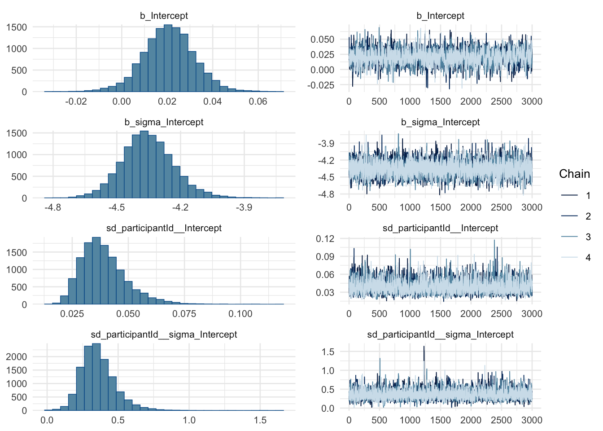
pp_check(m.5.x.va, ndraws = 100) +
theme(text = element_text(size = 10)) -> p1
p1
pp_check(m.5.x.va, ndraws = 100, type = "pit_ecdf") +
theme(text = element_text(size = 10)) -> p2
p2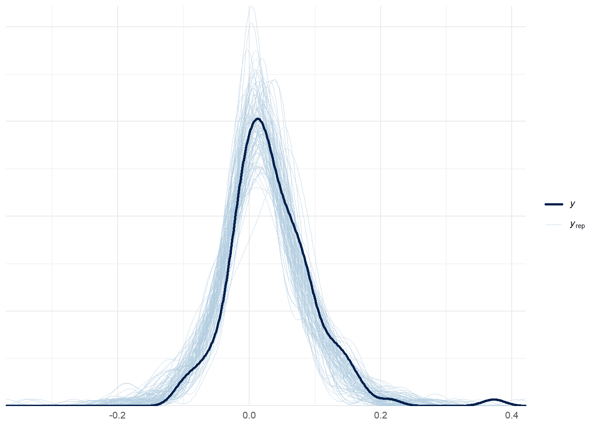
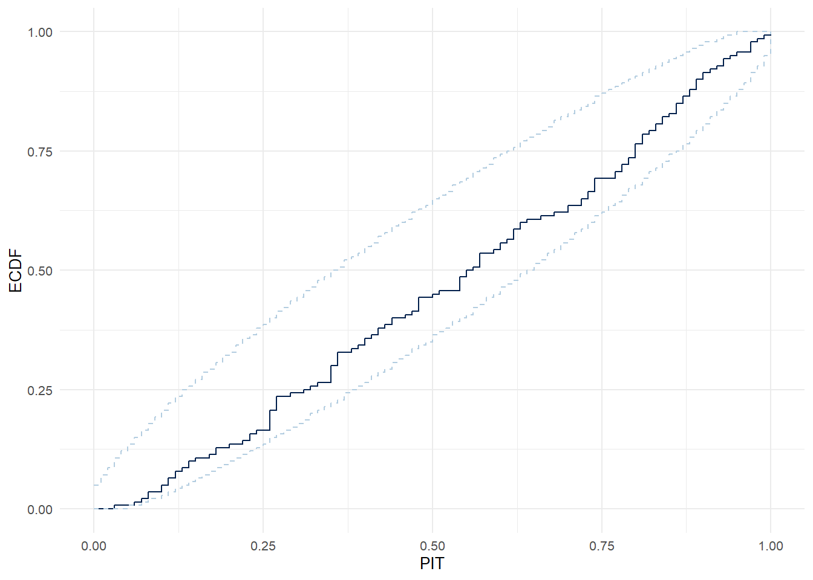
ggsave(here("figs", "task5-x-pp-check.pdf"), p1,
width = 10, height = 5, units = "cm", dpi = 300)
ggsave(here("figs", "task5-x-pit-ecdf.pdf"), p2,
width = 10, height = 5, units = "cm", dpi = 300)Posterior for population level mean and sd:
# m.5.x.va %>% get_variables(.)
m.5.x.va %>% spread_draws(b_Intercept, b_sigma_Intercept) %>%
mutate(b = exp(b_Intercept),
b_sigma = exp(b_sigma_Intercept)) %>%
pivot_longer(6:7) %>%
ggplot(aes(x = value, y = name)) +
stat_halfeye()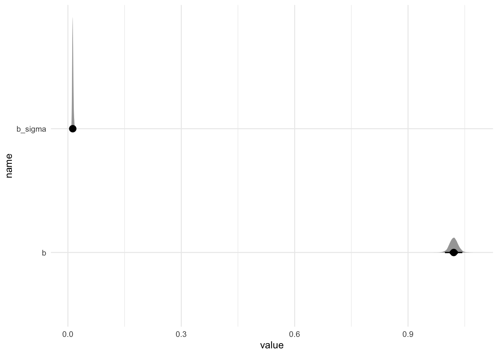
Plot existing data on top of prediction:
# for an average participant
prediction_grid <- task5_df %>% mutate(error_va = va.select.x - va.ans.x) %>%
filter(!participantId %in% task5.x.exclude) %>%
data_grid(va.ans.y = seq_range(va.ans.y, n = 100),
participantId = unique(participantId)) %>%
add_predicted_draws(m.5.x.va, ndraws = 1000)
ggplot(prediction_grid, aes(x = va.ans.y, y = .prediction)) +
stat_lineribbon(
.width = c(.95, .80, .50),
# alpha = 0.5,
linewidth = 0.5
) + scale_fill_brewer(palette = "Blues") +
geom_point(data = filter(task5_df, !participantId %in% task5.x.exclude), aes(y = va.select.x - va.ans.x, x = va.ans.y),
alpha = 0.5,
size = 0.5) +
labs(title = "Dot to x-axis", y = "Signed Error", x = "Distance to X-Axis") +
# theme_minimal(base_size = 8) +
theme(legend.position = "none") -> p1
p1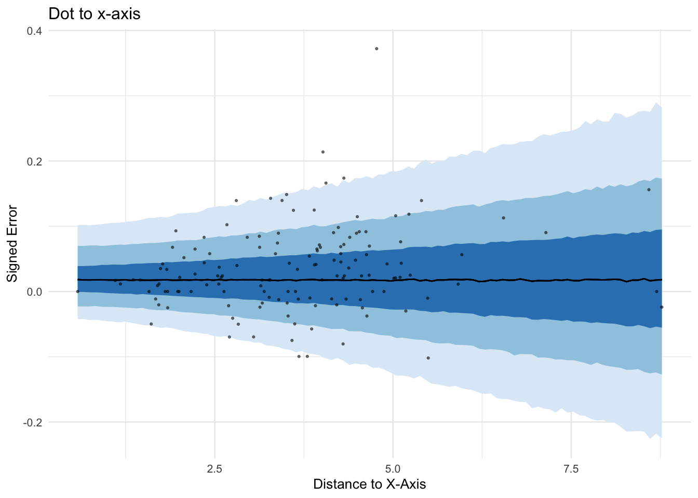
task5_df %>% ggplot(aes(x = va.ans.x, y = va.select.y - va.ans.y)) +
geom_point(alpha = 0.5)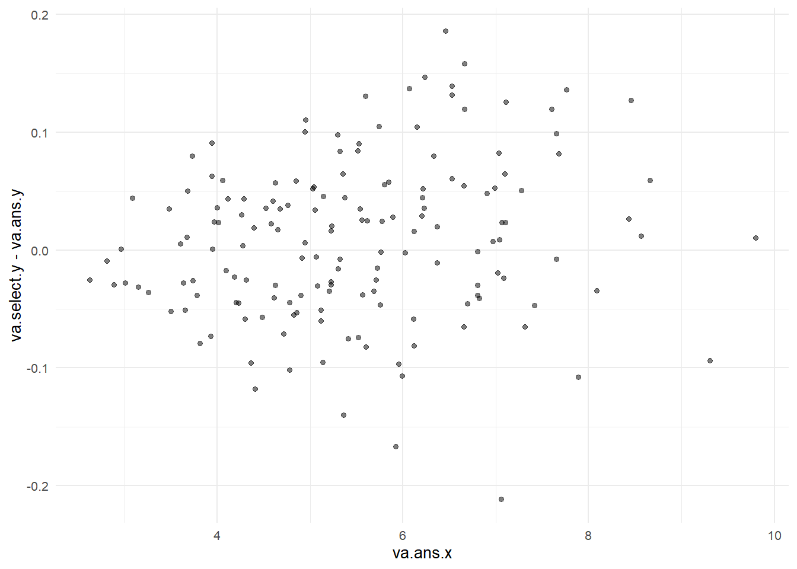
Math:
\[\begin{align*} \texttt{error}_i &\sim \mathcal{N}(0, \sigma_{i, \text{PID}[i]}) \\ \log(\sigma_{i, j}) &= \alpha_j + \log(\texttt{va.ans.x}_i) \\ \alpha_j &\sim N(\mu_\alpha, \sigma_\alpha) \\ \mu_\alpha &\sim N(0, 1) \\ \sigma_\alpha &\sim \text{Half-Cauchy}(0, 1) \end{align*}\]
Formula and prior:
f <- bf(error_va ~ (1 | participantId),
sigma ~ (1|participantId) + offset(log(va.ans.x)))
p <- c(
prior(normal(0, 1), class = Intercept),
prior(normal(0, 1), class = sd, group = participantId, lb = 0),
prior(normal(0, 1), class = Intercept, dpar = "sigma"),
prior(normal(0, 1), class = sd, group = participantId, dpar = sigma, lb = 0)
)Fit model:
m.5.y.va <- task5_df %>% mutate(error_va = va.select.y - va.ans.y) %>%
brm(
formula = f,
data = .,
family = gaussian(),
prior = p,
chains = 4,
cores = 4,
control = list(adapt_delta = 0.99),
iter = 6000,
file = here("fitted_models", "task5.y"),
file_refit = "on_change",
save_pars = save_pars(all = TRUE)
)Check fit and posterior:
summary(m.5.y.va) Family: gaussian
Links: mu = identity; sigma = log
Formula: error_va ~ (1 | participantId)
sigma ~ (1 | participantId) + offset(log(va.ans.x))
Data: . (Number of observations: 160)
Draws: 4 chains, each with iter = 6000; warmup = 3000; thin = 1;
total post-warmup draws = 12000
Multilevel Hyperparameters:
~participantId (Number of levels: 16)
Estimate Est.Error l-95% CI u-95% CI Rhat Bulk_ESS Tail_ESS
sd(Intercept) 0.04 0.01 0.03 0.07 1.00 3196 5500
sd(sigma_Intercept) 0.31 0.10 0.14 0.55 1.00 3978 5093
Regression Coefficients:
Estimate Est.Error l-95% CI u-95% CI Rhat Bulk_ESS Tail_ESS
Intercept 0.00 0.01 -0.02 0.03 1.00 2535 4712
sigma_Intercept -4.64 0.10 -4.84 -4.42 1.00 4486 6331
Draws were sampled using sample(hmc). For each parameter, Bulk_ESS
and Tail_ESS are effective sample size measures, and Rhat is the potential
scale reduction factor on split chains (at convergence, Rhat = 1).plot(m.5.y.va)
pp_check(m.5.y.va, ndraws = 100) +
theme(text = element_text(size = 10)) -> p1
pp_check(m.5.y.va, ndraws = 100, type = "pit_ecdf") +
theme(text = element_text(size = 10)) -> p2
p1
p2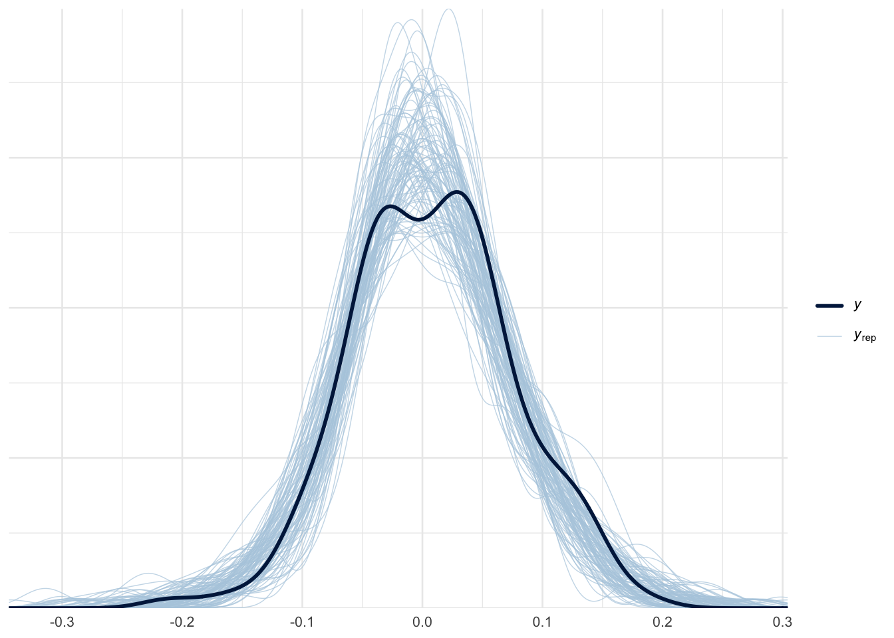
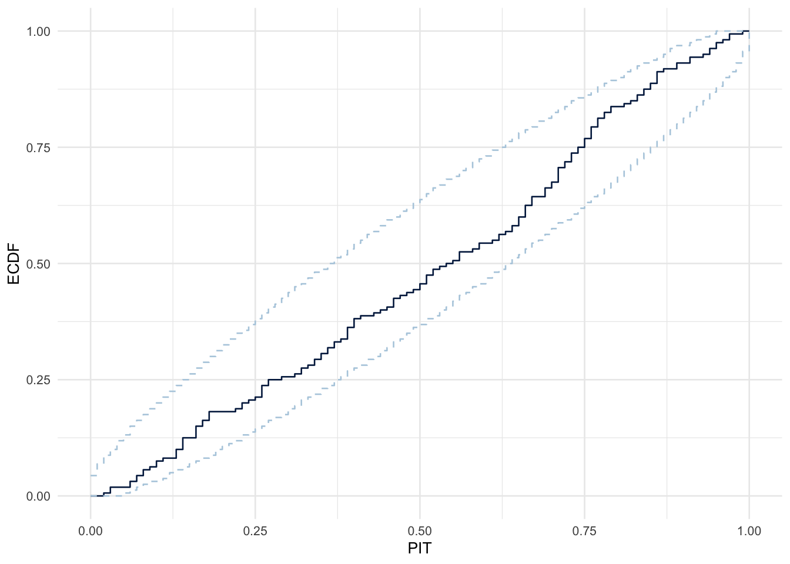
ggsave(here("figs", "task5-y-pp-check.pdf"), p1,
height = 5, width = 10, units = "cm", dpi = 300)
ggsave(here("figs", "task5-y-pit-ecdf.pdf"), p2,
height = 5, width = 10, units = "cm", dpi = 300)Plot results:
prediction_grid <- task5_df %>% data_grid(va.ans.x = seq_range(va.ans.x, n = 100),
participantId = unique(participantId)) %>%
add_predicted_draws(m.5.y.va, ndraws = 1000)
ggplot(prediction_grid, aes(x = va.ans.x, y = .prediction)) +
stat_lineribbon(
.width = c(.95, .80, .50),
# alpha = 0.5,
linewidth = 0.5
) +
scale_fill_brewer(palette = "Blues") +
geom_point(data = task5_df,
aes(y = va.select.y - va.ans.y, x = va.ans.x),
alpha = 0.5,
size = 0.5) +
# ylim(-0.5, 0.5) +
labs(title = "Dot to y-axis", y = "Signed Error", x = "Distance to Y-Axis") +
# theme_minimal(base_size = 8) +
theme(legend.position = "none") -> p2
p2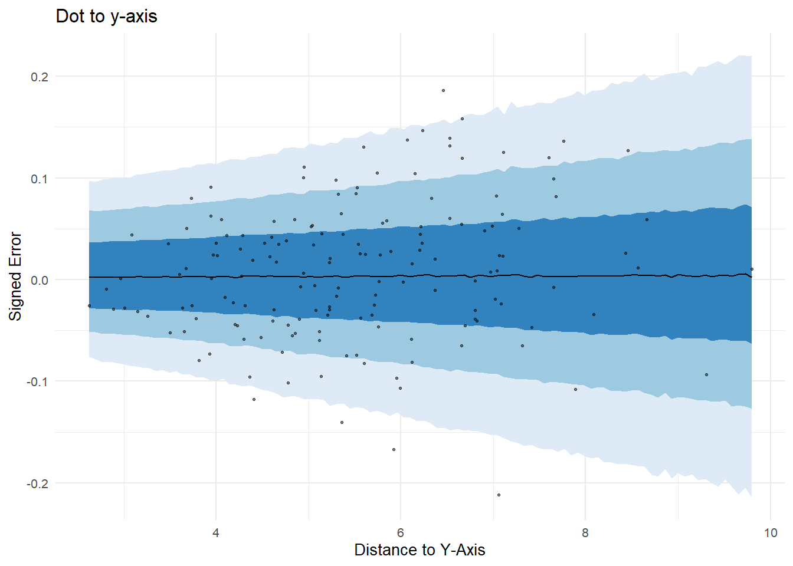
Get task 3 specific data:
task3_df <- task_df %>% filter(task == "task3") %>%
select(-slider.x, -slider.y) %>%
right_join(participants, by = join_by(participantId)) %>%
# do all the calculations for user's selected
mutate(pixel.select.x = data_to_pixel_x(data.select.x),
pixel.select.y = data_to_pixel_y(data.select.y),
phy.select.x = pixel_to_phy_x(pixel.select.x, pixelToMM),
phy.select.y = pixel_to_phy_y(pixel.select.y, pixelToMM),
va.select.x = vis_angle(phy.select.x, dist_to_screen),
va.select.y = vis_angle(phy.select.y, dist_to_screen)) %>%
mutate(data.ans.y = 0.5,
data.ans.x = qsgt(0.5, param.mu, param.sigma, param.lambda, param.p, param.q, mean.cent = FALSE)) %>%
# do all the calculations for the actual answer
mutate(pixel.ans.x = data_to_pixel_x(data.ans.x),
pixel.ans.y = data_to_pixel_y(data.ans.y),
phy.ans.x = pixel_to_phy_x(pixel.ans.x, pixelToMM),
phy.ans.y = pixel_to_phy_y(pixel.ans.y, pixelToMM),
va.ans.x = vis_angle(phy.ans.x, dist_to_screen),
va.ans.y = vis_angle(phy.ans.y, dist_to_screen))Descriptive plots:
task3_df %>% ggplot(aes(x = va.ans.x, y = va.select.y - va.ans.y)) +
geom_point(alpha = 0.5)
task3_df %>% ggplot(aes(x = va.select.y - va.ans.y)) +
geom_dots()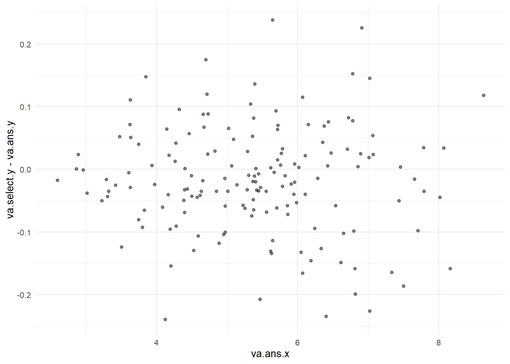
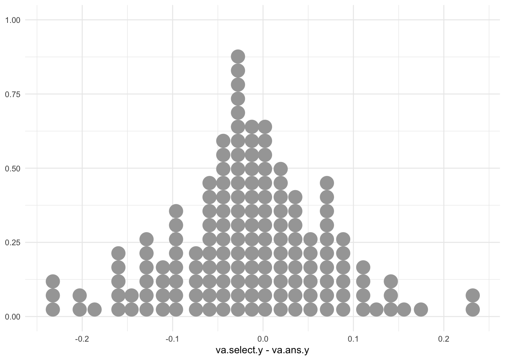
Math:
\[\begin{align*} \texttt{error}_i &\sim \mathcal{N}(0, \sigma_{i, \text{PID}[i]}) \\ \log(\sigma_{i, j}) &= \alpha_j + \log(\texttt{va.ans.x}_i) \\ \alpha_j &\sim N(\mu_\alpha, \sigma_\alpha) \\ \mu_\alpha &\sim N(0, 1) \\ \sigma_\alpha &\sim \text{Half-Cauchy}(0, 1) \end{align*}\]
Formula and prior:
f <- bf(error_va ~ (1 | participantId),
sigma ~ (1|participantId) + offset(log(va.ans.x)))
p <- c(
prior(normal(0, 1), class = Intercept),
prior(normal(0, 1), class = sd, group = participantId, lb = 0),
prior(normal(0, 1), class = Intercept, dpar = "sigma"),
prior(normal(0, 1), class = sd, group = participantId, dpar = sigma, lb = 0)
)Fit model:
m3 <- task3_df %>%
mutate(error_va = va.select.y - va.ans.y,
log.va.ans.x = log(va.ans.x)) %>%
brm(
formula = f,
data = .,
family = gaussian(),
prior = p,
chains = 4,
cores = 4,
file = here("fitted_models", "task3"),
file_refit = "on_change",
save_pars = save_pars(all=TRUE),
control = list(adapt_delta = 0.99),
iter = 6000
)Check fit and posterior:
summary(m3) Family: gaussian
Links: mu = identity; sigma = log
Formula: error_va ~ (1 | participantId)
sigma ~ (1 | participantId) + offset(log(va.ans.x))
Data: . (Number of observations: 160)
Draws: 4 chains, each with iter = 6000; warmup = 3000; thin = 1;
total post-warmup draws = 12000
Multilevel Hyperparameters:
~participantId (Number of levels: 16)
Estimate Est.Error l-95% CI u-95% CI Rhat Bulk_ESS Tail_ESS
sd(Intercept) 0.05 0.01 0.04 0.08 1.00 2603 4891
sd(sigma_Intercept) 0.50 0.13 0.30 0.80 1.00 3302 4914
Regression Coefficients:
Estimate Est.Error l-95% CI u-95% CI Rhat Bulk_ESS Tail_ESS
Intercept -0.01 0.01 -0.04 0.02 1.00 1963 3711
sigma_Intercept -4.46 0.15 -4.73 -4.14 1.00 2811 3217
Draws were sampled using sample(hmc). For each parameter, Bulk_ESS
and Tail_ESS are effective sample size measures, and Rhat is the potential
scale reduction factor on split chains (at convergence, Rhat = 1).plot(m3)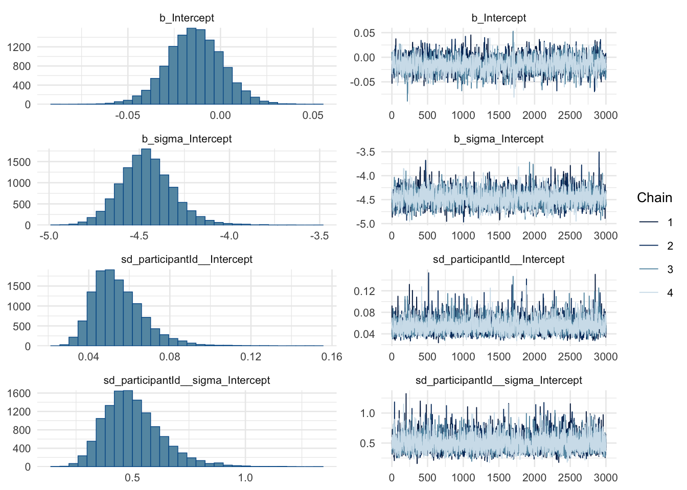
pp_check(m3, ndraws = 100) +
theme(text = element_text(size = 10)) -> p1
pp_check(m3, ndraws = 100, type = "pit_ecdf") +
theme(text = element_text(size = 10)) -> p2
p1
p2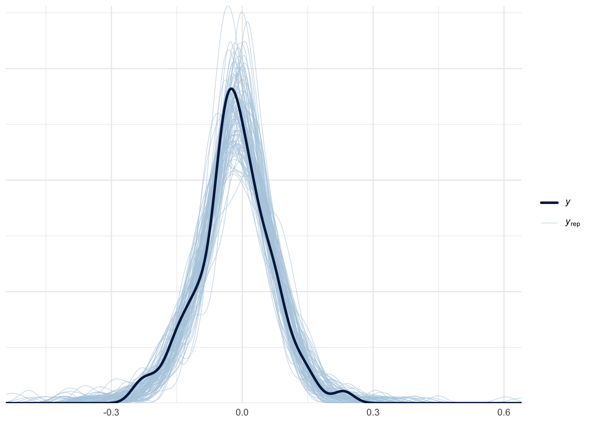
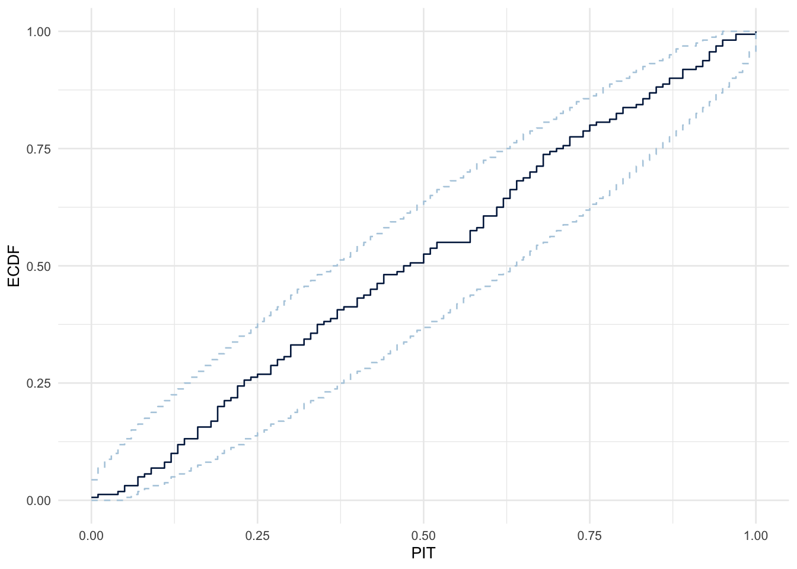
ggsave(here("figs", "task3-pp-check.pdf"), p1,
height = 6, width = 8, units = "cm", dpi = 300)
ggsave(here("figs", "task3-pit-ecdf.pdf"), p2,
height = 6, width = 8, units = "cm", dpi = 300)Plot:
prediction_grid <- task3_df %>% mutate(error_va = va.select.y - va.ans.y) %>%
data_grid(va.ans.x = seq_range(va.ans.x, n = 100),
participantId = unique(participantId)) %>%
add_predicted_draws(m3)
prediction_grid %>%
ggplot(aes(x = va.ans.x, y = .prediction)) +
stat_lineribbon(
.width = c(.95, .80, .50),
# alpha = 0.5,
linewidth = 0.5
) + scale_fill_brewer(palette = "Blues") +
geom_point(data = task3_df, aes(y = va.select.y - va.ans.y, x = va.ans.x),
alpha = 0.5, size = 0.5) +
# theme_minimal(base_size = 8) +
theme(legend.position = "none") +
labs(y = "Signed error", x = "Distance to Y-Axis") -> p3
p3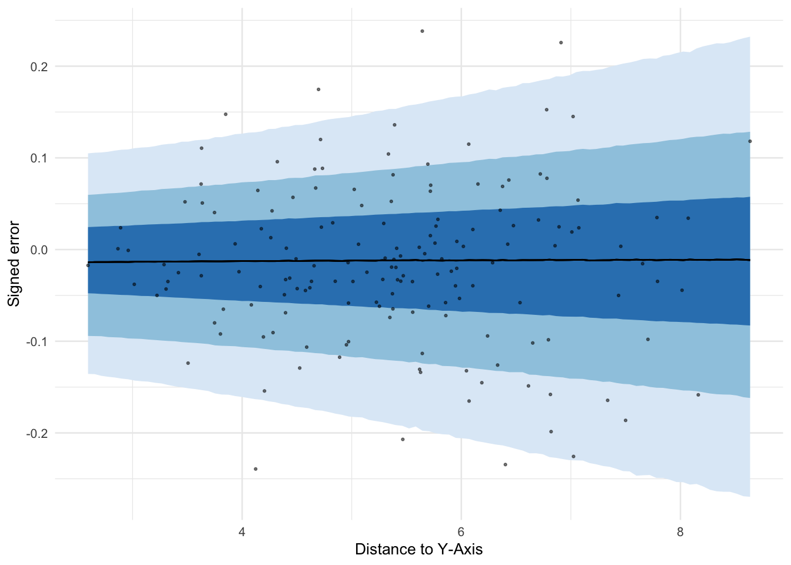
ggsave(here("figs", "task3.pdf"), plot = p3,
height = 6, width = 8, units = "cm", dpi = 300)